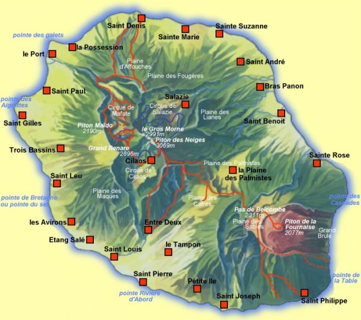
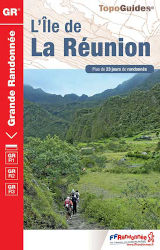
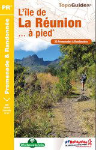

Ne sont présentés ici que les chemins de grande randonnée. La Réunion offre plein d'autres circuits qu'il n'est pas possible de montrer sur une si petite image.
: le GR 1 ( variantes en pointillés )
: le GR 2 ( variantes en pointillés )


Topoguide
GR R1, GR R2 et GR R3
Federation Francaise De Randonnee Pedestre
Collection Grande Randonnee
Format 13cm x 21cm
{% fnac "topoguide-gr", "https://livre.fnac.com/a12022764/Collectif-L-ile-de-la-Reunion" %}

Topoguide
25 balades et randonnées réparties sur l'ensemble de l'île
Federation Francaise De Randonnee Pedestre
Collection PR
Format 13cm x 21cm
{% fnac "topoguide-25", "https://livre.fnac.com/a11244938/Collectif-L-ile-de-La-Reunion-a-pied" %}